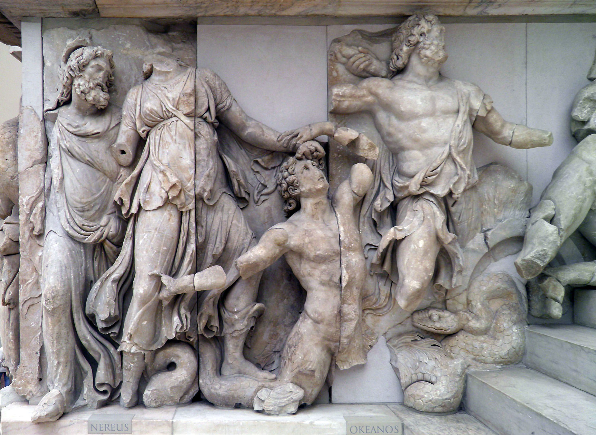

Ancient Greece refers to the civilization that emerged in the eastern Mediterranean region, primarily on the Greek peninsula and its surrounding islands, from around the 8th century BCE until the Roman conquest in the 2nd century BCE. This period is characterized by its profound contributions to Western culture, including developments in politics, philosophy, science, and the arts. Ancient Greece is often divided into several historical periods: the Archaic period (c. 800-500 BCE), the Classical period (c. 500-323 BCE), and the Hellenistic period (c. 323-31 BCE). The civilization was known for its city-states, or poleis, such as Athens, Sparta, and Corinth, each of which had its own government and way of life. These city-states were united by a common Greek language and cultural practices but were politically independent, leading to a rich diversity of ideas and achievements across the region.
Athens, one of the most prominent city-states in ancient Greece, exemplifies the unique aspects of this civilization. Founded around the 8th century BCE, Athens is particularly renowned for its development of democracy. In the 5th century BCE, during the leadership of Pericles, Athens became the center of political, cultural, and intellectual life in Greece. The city-state introduced a system of direct democracy where free male citizens could participate in decision-making processes through assemblies and public debate. This democratic system allowed citizens to vote on laws and policies directly, laying the groundwork for modern democratic institutions.
Athens was also a hub of intellectual and artistic achievements. Philosophers such as Socrates, Plato, and Aristotle made significant contributions to Western philosophy, exploring fundamental questions about existence, ethics, and governance. The city-state also saw the creation of influential works of literature, including the epic poems of Homer and the tragedies of playwrights like Sophocles and Euripides. In architecture, the Parthenon, a temple dedicated to the goddess Athena, stands as a testament to the Greeks' mastery of classical architecture and their dedication to religious and cultural values.
Overall, Ancient Greece was a civilization that greatly influenced the development of Western thought and culture through its political innovations, philosophical inquiries, artistic expressions, and scientific advancements.
One of the most compelling reasons to study Ancient Greece is its foundational role in the development of Western democratic principles. The city-state of Athens, particularly during the 5th century BCE, introduced the concept of direct democracy, where citizens actively participated in the legislative and decision-making processes. This early form of democracy allowed free male citizens to vote on laws and policies, shaping the political structure of the city-state. By learning about Athens and its democratic system, we gain insight into the origins and evolution of democratic governance. This historical context is crucial for understanding modern democratic institutions and practices, which are rooted in the principles developed by the Greeks. Studying Ancient Greece's approach to democracy helps us appreciate the complexities of democratic systems, the importance of civic engagement, and the challenges that arise in the practice of democracy.
Ancient Greece is renowned for its significant contributions to philosophy and intellectual thought, which continue to influence contemporary philosophy, ethics, and logic. Philosophers such as Socrates, Plato, and Aristotle made groundbreaking advancements in various fields, including metaphysics, epistemology, ethics, and political theory. Socrates' method of questioning, Plato's ideas on forms and the ideal state, and Aristotle's work on logic and science laid the groundwork for Western philosophical traditions. Understanding these early philosophical contributions provides valuable perspectives on the origins of many modern philosophical debates and theories. It also helps us grasp the intellectual foundations of critical thinking, ethical reasoning, and scientific inquiry that continue to shape contemporary thought and academic disciplines.
The artistic and architectural achievements of Ancient Greece have had a lasting impact on Western culture and aesthetics. Greek art and architecture, particularly during the Classical period, set high standards for beauty, proportion, and design. The Parthenon, a temple dedicated to the goddess Athena, exemplifies the Greeks' mastery of classical architecture and their dedication to religious and cultural values. Additionally, Greek sculptors like Phidias and Praxiteles created statues that emphasized idealized human forms and anatomical precision. By studying Ancient Greek art and architecture, we gain an appreciation for the aesthetic principles that have influenced subsequent artistic movements and architectural styles. This knowledge also enhances our understanding of how cultural values and religious beliefs are expressed through artistic and architectural forms.
The Archaic period marks the beginning of significant development in Ancient Greece following the Dark Ages. It is characterized by the formation of the Greek city-states, or poleis, and the establishment of early forms of governance, such as monarchies and oligarchies. During this period, the Greeks began to emerge from the cultural and economic stagnation of the previous centuries, leading to an era of growth and innovation.
One notable example from the Archaic period is the establishment of the city-state of Athens. During this time, Athens saw the construction of its first monumental structures and the development of its initial political and social institutions. The period also witnessed the creation of early forms of Greek art and literature, including the epic poems of Homer, such as the "Iliad" and the "Odyssey." These works not only reflect the values and beliefs of the time but also laid the foundation for later literary traditions. Additionally, the Archaic period saw the introduction of the first Olympic Games in 776 BCE, an event that celebrated athletic prowess and fostered a sense of unity among the Greek city-states. More about Archaic Period
Cr.: The Metropolitan Museum of Art
The Classical period is often regarded as the height of Greek civilization, marked by significant advancements in politics, philosophy, art, and science. This era saw the flourishing of democratic ideals, particularly in Athens, where the city-state developed a direct democracy that allowed citizens to participate in decision-making processes. The period is also known for its contributions to philosophy, with influential thinkers such as Socrates, Plato, and Aristotle making lasting impacts on Western thought.
A prominent example of the Classical period is the construction of the Parthenon on the Acropolis of Athens. Designed by architects Ictinus and Callicrates and adorned with sculptures by Phidias, the Parthenon exemplifies the architectural and artistic achievements of the time. The Classical period also saw the development of dramatic arts, with playwrights like Sophocles, Euripides, and Aeschylus producing influential tragedies that explored themes of human nature and morality. The period concluded with the death of Alexander the Great in 323 BCE, which marked the beginning of the Hellenistic era. More about Classical Period
Cr.: Utah State University
The Hellenistic period began with the death of Alexander the Great in 323 BCE and lasted until the Roman conquest of Greece in 31 BCE. This era was marked by the spread of Greek culture and influence across a vast empire that extended from Greece to Egypt and into Asia. Alexander's conquests facilitated cultural exchange and the blending of Greek and local traditions, leading to the creation of a cosmopolitan Hellenistic world. One significant example of this period is the city of Alexandria in Egypt, founded by Alexander and renowned for its great library and scholarly activities. The Hellenistic period saw advancements in various fields, including science, mathematics, and art. Figures such as Archimedes and Eratosthenes made significant contributions to mathematics and astronomy, while artists like Lysippus and Apelles pushed the boundaries of sculpture and painting. This era also saw the development of new philosophical schools, such as Stoicism and Epicureanism, which offered different perspectives on how to live a fulfilling life. The Hellenistic period's cultural and intellectual achievements had a lasting impact on the subsequent Roman Empire and continue to influence Western culture today. More about Hellenistic Period
Cr.: Smarthistory
The political landscape of Ancient Greece was fundamentally shaped by the concept of the polis, or city-state. Each polis functioned as an independent political entity, with its own government, laws, and policies. Unlike modern nation-states, these city-states were relatively small, often encompassing a single city and its surrounding territory. The polis was characterized by its unique form of government, which could range from oligarchies and monarchies to democracies. This decentralized political structure meant that the political culture of Ancient Greece was diverse and varied, with each city-state developing its own approach to governance. For instance, Athens is famous for its development of direct democracy, where citizens had the opportunity to participate directly in decision-making through assemblies and voting. In contrast, Sparta was known for its rigid military oligarchy, where power was concentrated in the hands of a small ruling class and two hereditary kings. This multiplicity of political systems within Ancient Greece allowed for a rich exchange of ideas and practices, which contributed to the evolution of political thought.
Athenian democracy, which flourished during the 5th century BCE, is one of the most renowned and influential political systems in history. It was characterized by direct participation of free male citizens in the decision-making process, contrasting sharply with the representative democracies of today. The Athenian system included several key institutions: the Ekklesia (Assembly), which was the principal decision-making body where citizens voted on laws and policies; the Boule (Council of 500), which prepared legislation and managed daily affairs; and the Dikasteria (Courts), where legal disputes were adjudicated by large juries. This system allowed for broad public involvement and was underpinned by the principle of isonomia (equality before the law). However, it is important to note that Athenian democracy was limited in scope, excluding women, slaves, and non-citizens from political participation. Despite these limitations, the principles of Athenian democracy laid the groundwork for modern democratic systems and continue to be studied for their pioneering approach to citizen participation and governance. More about Athenian Democracy
In contrast to Athenian democracy, Sparta was governed by an oligarchic system characterized by a dual monarchy and a council of elders. The Gerousia (Council of Elders), which included the two kings and 28 other members over the age of 60, held significant power in setting policy and guiding the state. The Spartan system was heavily militaristic, with a focus on maintaining a disciplined and formidable army. This focus was reflected in the rigorous training and education system known as the agoge, which emphasized military skill, endurance, and loyalty to the state. The Spartan society was divided into three main classes: the Spartiates (full citizens with military obligations), the Perioikoi (free non-citizens who engaged in commerce and trade), and the Helots (state-owned serfs who performed agricultural labor). This class structure was designed to ensure that the Spartiates could dedicate themselves to military service without the burden of economic responsibilities. The Spartan model of governance and military organization played a significant role in maintaining its power and influence in the Greek world, particularly in its conflicts with Athens during the Peloponnesian War. More about Spartan Oligarchy
The political ideas and philosophies developed in Ancient Greece have had a profound and lasting impact on Western political thought. Thinkers such as Socrates, Plato, and Aristotle contributed extensively to political philosophy and theory. Socrates is known for his method of critical questioning, which sought to uncover ethical truths and encourage thoughtful dialogue. Plato, his student, explored ideal forms of governance in his work "The Republic," proposing the concept of philosopher-kings who would rule based on their wisdom and virtue. Aristotle, in turn, examined various forms of government in his work "Politics," analyzing their strengths and weaknesses and advocating for a mixed constitution that balanced elements of democracy, oligarchy, and monarchy. These philosophical contributions laid the foundation for later political theories and systems, influencing concepts such as justice, governance, and the role of the state in individual lives. The legacy of Greek political philosophy continues to be relevant in contemporary discussions about political ethics, governance, and the nature of justice. More about Ancient Greek Philosophy
Ancient Greek society was highly stratified and organized into distinct social classes, each with specific roles and privileges. At the top of the social hierarchy were the citizens, who enjoyed full legal and political rights. In Athens, this class included free men who were born to Athenian parents and who could participate in the democratic process. Below the citizens were the metics, or resident foreigners, who lived in Greek city-states but lacked citizenship rights. They contributed significantly to the economy through trade and craft but were excluded from political life. At the bottom of the social hierarchy were the slaves, who were considered property rather than persons with rights. Slavery was integral to the economic and social fabric of Ancient Greece, with slaves working in households, farms, and various trades. This rigid class system shaped every aspect of daily life, from political participation to economic activity, and contributed to the complex social dynamics of the time.
Family life in Ancient Greece was governed by strict social norms and gender roles. The oikos, or household, was the basic unit of society, with the male head of the household holding authority over all members. Women, while central to family life, were largely confined to domestic roles and were expected to manage the household, raise children, and oversee slaves. In Athens, women had limited legal rights and were generally excluded from public life, whereas in Sparta, women had more freedom and property rights, reflecting the militaristic and communal nature of Spartan society. The status of women varied significantly between city-states, but in general, they were subordinate to men and their roles were defined by societal expectations of domesticity and family loyalty.
Education and intellectual life were highly valued in Ancient Greece, particularly in Athens, where the pursuit of knowledge and philosophy flourished. Education for boys, particularly those from wealthy families, involved instruction in a range of subjects including rhetoric, mathematics, music, and physical training. This education aimed to prepare young men for active participation in civic life and public discourse. Prominent figures such as Socrates, Plato, and Aristotle contributed to a rich intellectual tradition that explored philosophy, politics, science, and the arts. Public debates and philosophical discussions were common, reflecting the Greek commitment to intellectual inquiry and the exchange of ideas. This emphasis on education and critical thinking had a profound impact on Western thought and laid the groundwork for future academic and philosophical traditions.
Religion played a central role in Ancient Greek society, influencing both public and private life. The Greeks practiced a polytheistic religion with a pantheon of gods and goddesses, each associated with various aspects of life and nature. Major deities included Zeus, the king of the gods, Athena, the goddess of wisdom, and Apollo, the god of the sun and prophecy. Religious practices included sacrifices, festivals, and oracles, with temples serving as important centers of worship. Cults and mystery religions, such as the Eleusinian Mysteries dedicated to Demeter and Persephone, also played a significant role, offering personal spiritual experiences and promises of afterlife rewards. These religious practices were deeply intertwined with daily life and civic activities, reflecting the integral role of religion in shaping Greek cultural and social norms.
Leisure and entertainment were important aspects of Ancient Greek life, reflecting the cultural values and social practices of the time. Public events such as the Olympic Games, held every four years in Olympia, were major social and religious occasions that showcased athletic prowess and fostered a sense of shared identity among the Greeks. Theatrical performances were also central to Greek culture, with plays by dramatists such as Aeschylus, Sophocles, and Euripides being performed in large open-air theaters. These plays explored themes of morality, politics, and human nature, and were a key form of public entertainment and social commentary. Additionally, symposia, or social gatherings where men would discuss philosophy, politics, and enjoy music and poetry, were common in elite circles. These leisure activities not only provided entertainment but also reinforced social bonds and cultural values, reflecting the Greeks' appreciation for both intellectual and physical excellence.
Mathematics in ancient Greece was highly developed and influential, with notable advancements in geometry and number theory. Euclid, often referred to as the "Father of Geometry," wrote "Elements," a comprehensive compilation of the knowledge of geometry at the time. This work, consisting of thirteen books, systematically presented the principles of geometry through definitions, postulates, and proofs. Euclid's logical approach to the subject provided a foundation for future mathematicians and is still used in modern education. Another significant mathematician, Pythagoras, is famous for the Pythagorean theorem, which establishes a fundamental relationship between the sides of a right triangle. His contributions extend beyond geometry into number theory and the concept of mathematical harmony in nature. These Greek contributions to mathematics emphasized deductive reasoning and abstract thinking, laying the groundwork for modern mathematics and influencing subsequent scientific developments.
In the field of astronomy, the Greeks made remarkable strides with their observations and theoretical models. Hipparchus is recognized for his work in developing trigonometry and creating the first known star catalog, which laid the foundation for later astronomical studies. His observations of celestial bodies and their movements led to more accurate predictions of astronomical events. Claudius Ptolemy, another significant figure, wrote the "Almagest," an influential work that compiled Greek astronomical knowledge and presented a geocentric model of the universe, which dominated Western thought for over a thousand years. In physics, Archimedes made significant contributions, particularly with his principle of buoyancy, which explains why objects float or sink in fluids. His work also included innovations in the study of levers, pulleys, and the mechanical advantage of simple machines. Archimedes' discoveries laid important groundwork for both theoretical and applied physics.
Ancient Greek contributions to biology and medicine were transformative, with early pioneers establishing principles that would guide future scientific inquiry. Aristotle made extensive observations of animal anatomy and behavior, classifying animals into various groups based on their physical characteristics and life cycles. His work in comparative anatomy, although limited by the technology of the time, provided a systematic approach to studying living organisms. Hippocrates, often called the "Father of Medicine," is known for his contributions to the field of clinical medicine. He emphasized the importance of observation and documentation in diagnosing and treating diseases, and the Hippocratic Oath, attributed to him, remains a fundamental ethical guideline for medical practice. These early Greek scientists laid the foundation for modern biology and medicine through their observational skills and emphasis on systematic research.
Engineering in ancient Greece saw numerous innovations that reflect the Greeks' practical application of scientific principles. Archimedes is also known for his inventions and contributions to mechanical engineering, including the Archimedean screw, a device for lifting water that was used in irrigation and mining. Another notable engineer, Hero of Alexandria, developed various mechanical devices such as the aeolipile (a steam-powered device), which demonstrated the principles of steam pressure and rotational motion. Greek advancements in engineering were not only practical but also reflected a deep understanding of the underlying scientific principles. These technological innovations greatly influenced both the ancient and later societies, showcasing the Greeks' ability to apply their scientific knowledge to solve real-world problems.
Socrates is one of the foundational figures in Western philosophy, renowned for his contributions to ethical theory and epistemology. Unlike many of his contemporaries, Socrates did not leave behind written works. Instead, his ideas and methods were recorded by his students, primarily Plato. Socrates is best known for his Socratic method, a form of cooperative dialogue aimed at stimulating critical thinking and illuminating ideas. This method involves asking a series of questions to challenge assumptions and encourage deeper understanding. For example, Socrates used this method to explore concepts such as justice, virtue, and the nature of knowledge. His focus on ethical behavior and the pursuit of virtue has had a lasting influence on philosophical thought, emphasizing the importance of questioning and self-examination in the quest for a meaningful life.
Plato, a student of Socrates, founded the Academy in Athens and made significant contributions to philosophy through his dialogues and the development of his own philosophical system. His most famous work, "The Republic," explores justice, the ideal state, and the nature of reality. Plato introduced the Theory of Forms, which posits that the material world is a shadow of a higher, more perfect realm of abstract Forms or Ideas. For instance, Plato argued that concepts such as beauty, justice, and equality exist as perfect Forms that can only be understood through reason and philosophical inquiry. Plato’s ideas about the structure of society, the nature of reality, and the pursuit of knowledge have deeply influenced Western philosophical traditions and continue to be studied and debated.
Aristotle, a student of Plato, made extensive contributions across various fields of philosophy, including logic, metaphysics, ethics, and natural science. His works, such as "Nicomachean Ethics," "Politics," and "Metaphysics," address fundamental questions about human nature, ethics, and the structure of reality. Aristotle is renowned for his development of formal logic and syllogistic reasoning, which laid the groundwork for deductive logic. His concept of the "Golden Mean," which suggests that virtue lies between extremes, reflects his approach to ethical behavior. In addition, Aristotle’s works on natural philosophy and biology were groundbreaking, as he conducted empirical observations and classified living organisms based on their characteristics. Aristotle’s systematic approach to philosophy and science profoundly shaped Western thought and provided a comprehensive framework for understanding the world.
Epicurus founded the school of philosophy known as Epicureanism, which emphasizes the pursuit of happiness through the avoidance of pain and the cultivation of simple pleasures. Epicurean philosophy is rooted in the belief that the greatest good is to attain tranquility and freedom from fear (ataraxia) and pain (aponia). Epicurus argued that the pursuit of knowledge and understanding of natural phenomena could alleviate fear of the gods and death, leading to a more serene and contented life. His ideas challenged the more traditional religious and ethical views of his time, promoting a materialistic understanding of the world where the focus is on personal well-being and rational choice. The Epicurean emphasis on simple living and intellectual contemplation influenced later philosophical and scientific thought, contributing to debates on ethics and the nature of human happiness.
Stoicism, founded by Zeno of Citium, is a school of thought that teaches the development of self-control and fortitude as a means to overcome destructive emotions and achieve a state of inner peace. Stoic philosophers, including Seneca, Epictetus, and Marcus Aurelius, emphasized the importance of rationality and the acceptance of fate. They believed that one should focus on what is within their control and remain indifferent to external events that are beyond their influence. For example, Stoics teach that suffering arises from our reactions to events rather than the events themselves, and by cultivating an attitude of detachment and acceptance, individuals can attain a serene and resilient state of mind. The principles of Stoicism have had a lasting impact on Western thought, influencing both personal development and ethical philosophy.
Ancient Greece, particularly in Athens, is celebrated as the birthplace of democracy. The Athenian democracy introduced the concept of direct citizen participation in decision-making, where free male citizens could vote on laws and policies in an assembly. This system emphasized the importance of civic engagement and the principle that government should be accountable to its people. The idea that individuals have a voice in their governance and that power should be derived from the consent of the governed remains a fundamental principle in modern democratic societies. The Athenian experiment in democracy serves as a powerful reminder of the value of participatory governance and the necessity of protecting democratic institutions to ensure that they serve the interests of all citizens.
Ancient Greece placed a high value on intellectual inquiry and the pursuit of knowledge. Philosophers like Socrates, Plato, and Aristotle emphasized the importance of critical thinking, questioning, and reasoned debate. Socrates, for example, is renowned for his method of asking probing questions to stimulate deeper understanding and challenge assumptions. This approach to inquiry and skepticism laid the groundwork for the development of Western philosophy and the scientific method. The Greek commitment to reasoned debate and evidence-based thinking underscores the importance of intellectual rigor and continuous questioning in the quest for truth and understanding. This legacy encourages us to value education, critical thinking, and the systematic pursuit of knowledge as essential components of personal and societal progress.
Ancient Greece made significant contributions to art and culture, producing timeless works in literature, theater, sculpture, and architecture. Figures such as Homer, Sophocles, and Phidias created masterpieces that continue to influence and inspire contemporary art and literature. Greek contributions to drama, including the development of tragedy and comedy, highlighted the power of storytelling to explore human nature, societal issues, and moral dilemmas. The architectural marvels of Greece, such as the Parthenon, exemplify principles of beauty and proportion that remain influential in modern design. The Greek emphasis on cultural and artistic achievement teaches us the enduring value of creativity and artistic expression in shaping and reflecting human experience.
Ancient Greek philosophy extensively explored concepts of ethics and virtue, contributing to our understanding of moral behavior and personal character. Philosophers like Aristotle developed theories of virtue ethics, emphasizing the importance of moral character and the pursuit of a virtuous life as central to human flourishing. The Greek focus on the cultivation of virtues such as courage, temperance, and justice underscores the significance of ethical behavior both for individual development and for the well-being of society. This philosophical tradition highlights the importance of striving for personal integrity and ethical conduct, as well as the role of virtue in fostering harmonious and just communities.
The diverse schools of thought in ancient Greece, including Stoicism, Epicureanism, and Cynicism, offered valuable insights into personal development and the pursuit of a meaningful life. Stoicism, for example, teaches the importance of resilience and acceptance in the face of adversity, focusing on controlling one’s responses to external events rather than the events themselves. Epicureanism emphasizes the pursuit of simple pleasures and the avoidance of pain to achieve tranquility. These philosophical approaches provide practical guidance on managing emotions, making ethical choices, and finding contentment. The lessons from ancient Greek philosophy remind us of the value of self-reflection, philosophical inquiry, and the cultivation of inner virtues in achieving personal fulfillment and navigating the challenges of life.
One of the most enduring legacies of Ancient Greece is the invention of the Olympic Games. The first ancient Olympic Games were held in Olympia in 776 BCE as a religious festival honoring Zeus, the king of the Greek gods. These games were held every four years and featured a variety of athletic competitions, including running, wrestling, boxing, and chariot racing. The Olympics were not only a major cultural event but also a unifying force among the often-warring Greek city-states. The concept of the Olympic Games has had a lasting influence, evolving into the modern Olympic Games, which continue to celebrate athletic excellence and foster international unity. The tradition highlights the Greeks' commitment to physical fitness, competition, and the celebration of human potential.
Ancient Greece is credited with the birth of Western philosophy, which began in the 6th century BCE with pre-Socratic thinkers such as Thales and Anaximander, who sought to explain the nature of the cosmos and existence through rational inquiry. This intellectual tradition was further developed by Socrates, who emphasized the importance of questioning and dialogue in the pursuit of knowledge. Plato, a student of Socrates, founded the Academy and wrote dialogues exploring a range of philosophical issues, while his student Aristotle made significant contributions to logic, metaphysics, ethics, and natural sciences. These philosophers established foundational concepts in ethics, logic, and epistemology that continue to shape philosophical thought and inquiry to this day.
The concept of democracy was pioneered in ancient Athens around the 5th century BCE. Athenian democracy was a direct form of democracy where citizens participated in decision-making processes and the governance of the city-state. Key democratic institutions included the Assembly, where citizens could propose and vote on laws, and the Council of 500, which prepared the agenda for the Assembly. This system was revolutionary for its time, promoting the idea that government should be based on the will of the people rather than autocratic rule. The principles of Athenian democracy laid the groundwork for modern democratic systems and continue to influence contemporary political thought and governance practices.
Ancient Greece made substantial contributions to mathematics and science, laying the groundwork for many modern disciplines. Pythagoras, known for the Pythagorean theorem, made significant strides in geometry and number theory. Euclid’s work, "Elements," compiled much of the knowledge of geometry of his time and remained a fundamental text in mathematics for centuries. Archimedes made breakthroughs in physics and engineering, including the principle of buoyancy and innovations in lever mechanics. The Greek approach to scientific inquiry was characterized by systematic observation and logical reasoning, setting the stage for the development of the scientific method and influencing future generations of scientists and mathematicians.
Greek theatre, originating in the 6th century BCE, was a major cultural achievement and has had a profound impact on literature and performing arts. The genre of Greek tragedy was pioneered by playwrights such as Aeschylus, Sophocles, and Euripides, who explored complex themes of fate, justice, and human suffering in their plays. Comedy, with playwrights like Aristophanes, provided satirical commentary on contemporary social and political issues. Greek theatre was performed in open-air amphitheaters and was integral to religious festivals and civic life. The dramatic techniques and thematic explorations of Greek theatre continue to influence modern drama, storytelling, and performance arts, underscoring its lasting legacy in the cultural history of the Western world.
1. How did the Hubble Deep Field observation in 1995 change our understanding of the universe?
2. Describe one contribution of ancient Babylonians to early astronomy.
3. Explain the impact of the Islamic Golden Age on the development of astronomy during the medieval period.
4. How did the heliocentric model proposed by Copernicus revolutionize our understanding of the solar system?
5. What are some of the key research areas in contemporary astronomy, and why are they significant?